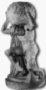

Troya'nın kuruluşu sırasında gökten düşen ve hakkında pek çok söylenceler üretilen Palladyon (Palladion) adlı o ünlü tahta heykelin öyküsü, aslında tanrıça Atena'nın ta çocukluk günlerine dek uzanıyordu...
Atena, çocukluğunu deniz tanrısı Triton'un küçük kızı Pallas'la birlikte geçirdi... İki kız çocuk birbirlerini çok seviyorlar, aralarında kendi uydurdukları değişik değişik oyunlar oynuyorlardı. Çok zaman olduğu gibi, Pallas'ın vur-kırcı babası tanrı Triton da kızların oyunlarına karışıyor; büyüdüklerinde uygulasınlar diye onlara çeşit çeşit savaş oyunları öğretiyordu. Zaten tanrıça Atena'nın savaş aygıtları kullanma ve daha sonraları savaşlara katılma huyu, ne yazık ki hep çocukluğundaki bu savaş oyunlarıyla ilgili alışkanlıklarından kaynaklanıyordu!..
Zaman içinde barışseverliğe, daha da insancıllaşmaya doğru dönüşümler geçirecek olan tanrıça Atena, zeytin ağacını bütün Akdeniz halklarına armağan edecekti. Aslında güzel sanatlara karşı üstün yetenekleri de olan bu tanrıça, büyüdüğünde bütün Akdeniz coğrafyasındaki genç kızlara dikiş, nakış, dokumacılık sanatlarını da öğretecekti... Bütün tanrılar ve insanlar gibi gene geçireceği evrimler sonunda, topal tanrı demirci Hefaystos'la birlikte, çalışan bütün kadın ve erkeklerin tanrıçası olacaktı...
İşte Pallas'la Atena, büyüklerin öğrettiği kavga-dövüş oyunları oynarken, sık sık aralarında tartışmaya, hatta saç saça, baş başa girmeye başladılar. Gene bir gün böyle tanrı Triton'un öğrettiği teke tek bir dövüş oyunu oynarken şaka gerçeğe dönüşüverdi aniden ve Atena, canı gibi sevdiği arkadaşı Pallas'ı kıyasıya pataklamak için ardı sıra hırsla koşmaya başladı. Bu koşuşma sırasında kızı Atena'nın düşüp yaralanacağını anlayan Baştanrı Zeus da, o ünlü kalkanını Pallas'ın önüne dikiverdi!.. Zavallı küçük Pallas, Zeus'un önüne birden koyuverdiği kalkanın şangırtısından öylesine ürktü ki, hemen bayılıp düştü oracığa ve bir daha da ayağa kalkamadı! Olaydan çok büyük üzüntüye kapılan Atena; arkadaşının anısını yaşatmak üzere, kendi elleriyle oyup işlediği tahtadan bir heykelini yaptı... Ve onun adını anıştıracak şekilde bu tahta heykele Palladyon adını verdi. Daha sonra da onu götürüp babası Baştanrı Zeus'un sarayındaki özel salona koydu... Zaman zaman yitirdiği arkadaşı Pallas'ın bu heykeline baktıkça, Atena'nın gök gözleri dolu dolu oluyordu. Ölümüne neden olduğu bu arkadaşından için için özürler dileyip biraz da olsa avunmaya çalışıyordu...
Günlerden bir gün, her zamanki gibi ayran gönüllü Baştanrı Zeus; sarayına konuk olarak gelen ve dünyamızı omuzları üstünde taşımakla cezalandırdığı tanrı Atlas'ın güzel kızı Elektra'ya hemen deli divane vuruluverdi!.. Ve kızı yakalayıp kucaklamak istedi! Elektra da onun ne kendisinden, ne de yıldırımlar saçan silahından hoşlanmadığı için kaçmaya ve Zeus da onu yakalamak için ardısıra koşmaya başladı... Bu koşuşmalardan yorulan Elektra, sonunda salondaki tahtadan heykel Palladyon'a sıkı sıkıya sarıldı. Öfkelenen Zeus da, heykeli Elektra'nın ellerinden sıyırıp aldı ve sarayının penceresinden, yıldızlarla ışıl ışıl yanıp sönen o derin boşluğa doğru fırlatıverdi! Tahta heykel Palladyon da boşlukta, yıldızlardan yıldızlara savrula savrula, Troya ovasındaki Gaflettepe denen yere düştü...

Tanrı Atlas omuzları üstünde dünyayı taşırken
İşte o sırada Troya kentinin kuruluş çalışmalarını sürdüren İlos ve arkadaşları, gökten düşen bu heykeli uzun uzun incelediler. Bu heykel; yeni kurulmakta olan bir kente gökyüzünün derinliklerinden düştüğüne göre, bunun kutsal bir armağan olduğu üzerinde hemen görüş birliğine vardılar. Sonra da onu tanrıça Atena'nın tapınağına özenle yerleştirdiler. Geçen zaman içinde Palladyon, Atena'nın heykeli olarak algılanıp benimsendi. Ne var ki bazı tarihçiler; Troyalıların, bu heykelin aslını tapınaktaki gizli bir bölmeye kapattıklarını ve yeniden yaptıkları bir benzerini de tapınağın salonuna koyduklarını öne sürdüler... Yüzyıllar sonra patlayan ünlü Troya savaşları sırasında da bu heykel çok önem kazandı. Troyalıların başkomutanı yiğit Hektor, işgalci Akhaları püskürtmesinde tanrıça Atena'nın kendilerine yardımcı olması için anası Hekabe'ye, Palladyon'la ilgili olarak şöyle dedi:
Evindeki en güzel, en büyük örtü hangisiyse,
Hangi örtüye en çok değer veriyorsan al onu,
Git doyumluk toplayan Atena'nın tapınağına,
Ört güzel saçlı Palladyon denen Atena'nın dizlerine...
Hatta Troyalıların danıştıkları ünlü bir tanrı bilicisi; bu Palladyon denen heykel, gök gözlü tanrıça Atena'nın tapınağında durdukça, Troya'nın işgalcilerce ele geçirilmesinin hiçbir zaman söz konusu olamayacağını söylemişti... O yüzden Troyalıların yenilmezliğinin Palladyon'dan kaynaklandığını öğrenen yağmacı Akhalar, onu casusları aracılığıyla tapınaktan çaldılar! Bu olaydan sonra da Troya düştü; yakılıp yıkıldı... Ne var ki Latin yazarlar da; Troya işgal edilip ateşe verildiğinde, Roma imparatorluğunu kuracak olan Troyalı Ayneyas'ın (Aineias) ilk iş olarak bu kutsal heykeli ve özürlü babasını yanına alıp Kazdağları'na sığındığını, sonra da İtalya'ya götürdüğünü söylemekteydiler. Gene onların söylediğine göre Romalılar, bu heykeli Vesta Tapınağı'na koydular.
Vesta Tapınağı'nda yayılmacı Roma İmparatorluğu'nun yenilmezliğini simgeleyen ve hiç söndürülmeyen bir ateş yanmaktaydı. Bu ateşin bekçileri olan güzel rahibeler de aynı tapınakta saklı tutulan Palladyon adlı heykeli sürekli koruyorlardı.
Tanrıların yeryüzündeki temsilcileri olduklarını söyleyen Roma imparatorları da, savaşa çıkmadan önce, tapınakta düzenlenen görkemli şölenlere katılıyorlar ve tanrıça Palladyon'un heykeliyle konuşuyorlardı. Savaşı kazanabilmek ve bol ganimetle dönebilmek için ona dualar ediyorlar, hep yanlarında olmalarını diliyorlardı.
Ve tapınaktan ayrılırken, başlatacakları savaşa tanrıçanın da katılacağını duyuruyorlardı halklarına...